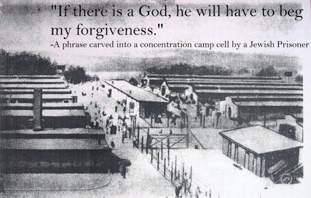

神が存在してもこの世界から悪や悲劇が消えない理由

履歴
(2021-01-16) 追加 (2020-07-25) 追加 (2020-06-26) 作成前置
・…を思いついた。大した内容ではないが忘れない内に記録しておく。たぶん、誰かが同じようなことを思いついて述べている筈。背景
Richard Carrier 博士 : 神は存在しない。それは 2300年前に論証されている。 (2018-11-25)関連
神はどこにいるのか？ 神が存在するのならば、神は私に許しを請わねばならない (2013-05-20) 田川建三の「存在しない神」に対する恨みと未練 (2018-08-26) 田川建三：「真のクリスチャンは神を信じない」。なぜなら神は偶像であり、実在しないゆえに。 （途中：その1） (2018-08-10) メモ：キリスト教における「邪悪な存在」と神 (2012-02-01) 田川 建三 : イエスが抱えていた人間的ゆがみ、屈折、愚かさ。 私：イエスの最後の言葉はこうあるべきだった。 (2019-07-24)エピクロスのパラドクス
He is famous also for the Epicurean paradox: Is god willing to stop evil, but unable? Then he is not omnipotent. Is he able but not willing? Then he is evil. Is he willing and able? Then why is there evil? Is he unable and unwilling? Then why is he god? ref: https://www.reddit.com/r/philosophy/comments/2hippw/epicurus/エピクロスのパラドクスはこうすれば解ける
… … … … (2020-06-26)
(以下、2020-07-25 追加分)前置
・上のパラドクスを述べたエピクロスも、「神が邪悪を廃することを欲しないか、廃することができないか、どちらかである。もし彼がそれを欲しないのであれば、神は善ではない。もし彼がそれをなし得ないのであれば、神は全能ではない。」 ref: メモ：キリスト教における「邪悪な存在」と神 (2012-02-01)と述べたアウグスティヌスも、 神が存在するのならば、神は私に許しを請わねばならない (2013-05-20) と彫った囚人のユダヤ人も、 神はどこにいるのか？ と問い、皮肉な答えをぶつけた Elie Wiesel も、 田川建三の「存在しない神」に対する恨みと未練 (2018-08-26) の田川建三も、みな勘違いをしている。彼らは皆、（全能にして善なる神がいるのならば） 「神は我々人間を放置しない筈だ。人間の苦境や苦難救ってくれる筈だ」（GSU） という神に対する強烈な依存と未練を抱いている。この GSU は幼児が母親に抱く心情を成人後も神に投影したものだから、根深い。 ・だが、全能にして善なる神がいても GSU は成立しない。つまり、全能にして善なる神は人間を救わない。その理由は単純。それを理解するのに、難解な神学や禅問答めいた精神世界の戯言などは不要。常識で足りる。 ・問題は全能という言葉。この全能という言葉が落とし穴。その落とし穴ゆえにパラドクスと見なされてきた。だが、以下のように無限集合論のアナロジーによって落とし穴が回避できる。万能にして善なる神が人間を救済しないわけ
(2021-01-16 begin) ・一言でいうと…。神のような存在にとって、人類は救済すべき対象とはならない。これが理由。 ・神は全知全能という意味で人間から隔絶した存在。その隔絶ゆえに、神から見ると人間は慈悲や善を施す対象にはなりえない。神の義を求める対象にも、救済の対象にもなりえない。 ・人間はバクテリア社会に人間の正義や道徳の観念を適用させようとは思わないし、バクテリアに人間を信仰して欲しいとも思わない。神にとって人間はバクテリアのようなもの。 ・以下、最近の記事からの引用。・同じことが神にも言える。神のような能力のある存在は、人間など相手にしない。人間は排水溝のバクテリアを支配・監督しようと思えばいつでもできるが、誰もそんなものを気にかけない。バクテリアが死滅しようが少しばかり増えようが気にしない。バクテリア社会の中の不遇な個体の願いを叶えてやろうとかは思いもよらない。 ・その神は、その神の所属する社会で（我々には想像もつかないが比喩で言えば）競争し、悩み、苦しみ、救いを求めている。バクテリアに人間の借金苦が分からないように、人間も神の苦悩はわからない。 ・神は人間にとっては全知全能の存在だが、神の世間では万能ではなくただの凡夫の一人。それゆえ、神は超神に救いを求める。神には人間を救おうというような余裕も意図もない。 ・超神も同じことで、超超神に救いを求めている。エピクロスのパラドックスもこれで解ける。そしてこれが、 神が存在してもこの世界から悪や悲劇が消えない理由 （途中：その2） (2020-07-25) となる。 ・エピクロスのパラドックスは「全知全能＝無限の能力」としたとき、無限は一種類しかないという近代以前の常識に基づいている。Cantor によって拓かれた無限集合論によって、無限には大小の差異があることが明らかとなった。雑に言えば整数より実数の方が無限に「大きい」。 ・同じように人間の意味する全知全能と人間以上の存在が意味する全知全能とではその間に無限のギャップがある。 ref: Jordan Maxwell : 地球を支配しているのは人間ではなく ET だ。 （途中：その2） - http://news21c.blog.fc2.com/blog-entry-17360.html (2021-01-15)人間が神になったら（ or 解脱したら）どうなるのか？
・ついでに…。仮にだが、（どういう経緯かは問わないが）人間が人間を超越したらどうなるのか？ ・答えは、その元人間はこの世界（＝人間が認識可能な範囲）から消え去る。その元人間がこの世界を指導したり救済することはない。仏教的に表現すれば「還相の菩薩」は存在しない。 ・いったん運転免許を取得したら、誰もかつての教習所に通わない。刑期を終え出獄したら誰も仲間のいる刑務所に戻ろうとしない。卒業生がふたたび生徒として同じ学校に戻ってくることはない。それと同じこと。彼らには新たな世界で、新たになすべきことがある。・だが…。そもそも、神は世界に存在していてはならないもの。世界が世界として存続するためには、神は不在でなくてはならない。その意味で神の不在は必然。 ref: フィリップ・K・ディックの神秘体験とその検証 （＋追加） (2018-08-04)(2021-01-16 end)蛇足
・この問題に絡めて田川の 田川建三：「真のクリスチャンは神を信じない」。なぜなら神は偶像であり、実在しないゆえに。 （途中：その1） (2018-08-10) という主張を考えると… (2020-07-25) (2021-01-16)
初出
神が存在してもこの世界から悪や悲劇が消えない理由 （途中：その3） (2021-01-16)